Connect
Plug DeskPet into your computer with a USB-C data cable. It wakes with a hello tune.
DeskPet reacts to your touch, keeps an eye on your computer, mirrors Claude Code and Codex activity and reminds you to take a breath.
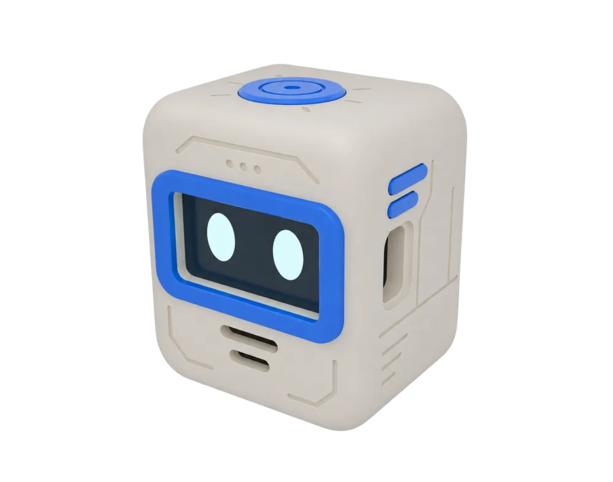
A compact rounded shell, expressive display, top touch sensor and angled stand — designed to stay close without getting in the way.
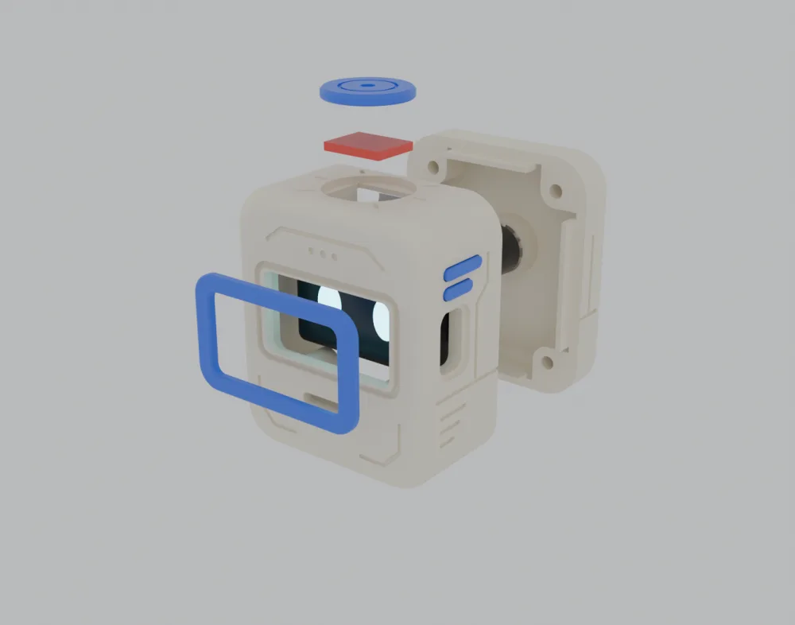
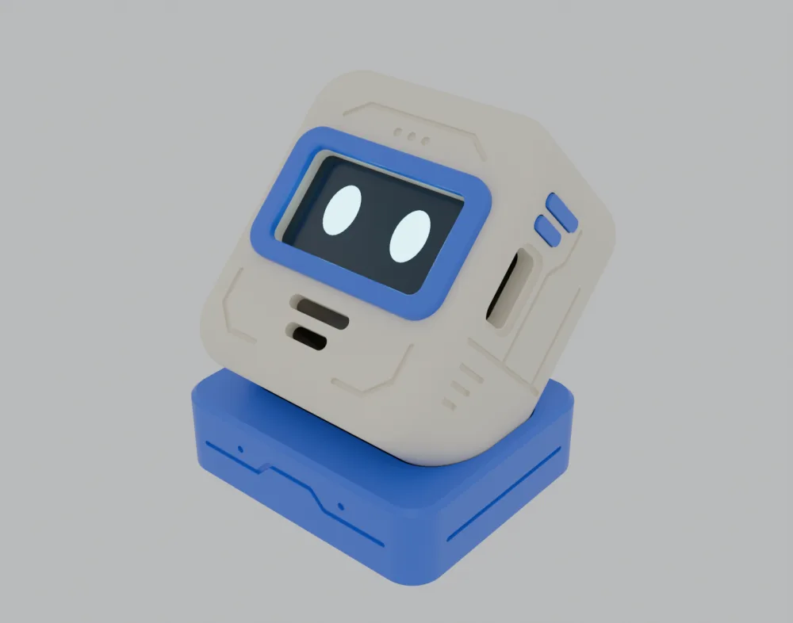
One cable. One tiny app. No terminal commands needed.
Plug DeskPet into your computer with a USB-C data cable. It wakes with a hello tune.
Choose your system below, open the file and select Install. Setup takes a few seconds.
Tap the head twice for live stats. Start Claude Code and watch DeskPet switch modes automatically.
The app runs quietly in the background and connects DeskPet to your computer. Latest release links are preserved from the original manual.
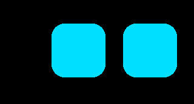
It looks around, blinks, sings when happy, gets lonely when ignored and drifts to sleep when the desk goes quiet.
Recorded straight from DeskPet's own display over USB — no mock-ups.
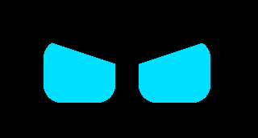
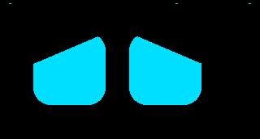
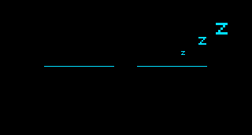
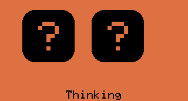
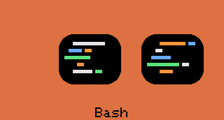
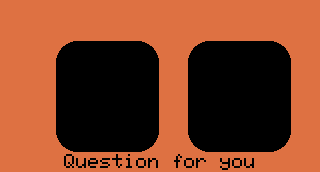
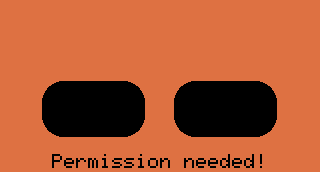
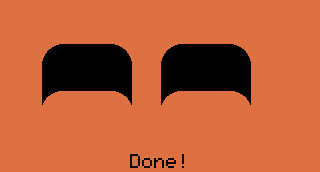
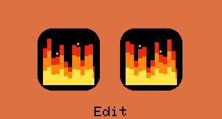
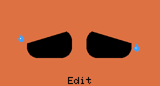
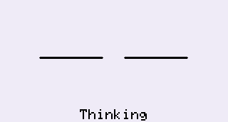
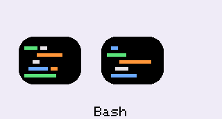
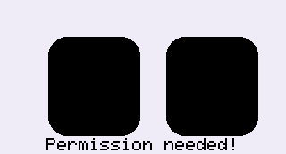
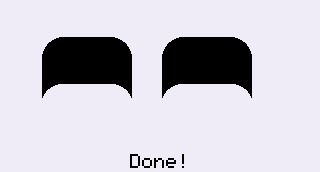
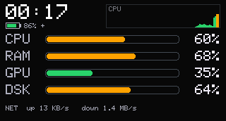
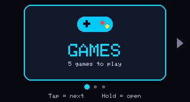
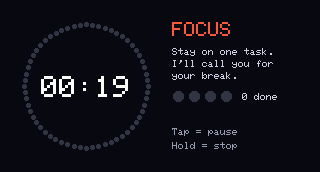
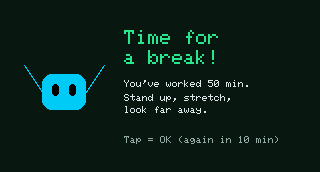
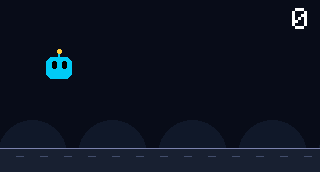
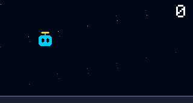
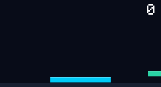
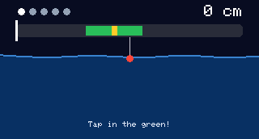
A light touch on the top of the head is all it takes.
Get its attention or acknowledge a call.
Toggle the live monitor screen.
Open Games, Focus and Settings.
Pet your robot, or confirm a menu choice.
A built-in 25-minute focus timer, gentle break cues and a companion that celebrates every round.
DeskPet only receives time since your last input. It never sees what you type.
Common setup questions from the full DeskPet manual.
Check that your USB-C cable carries data, not power only. Try another port, then reopen the installer.
Open a new Claude Code session after installation. Remote SSH sessions and Claude Code in WSL are not supported.
GPU reporting depends on the system: all Macs, NVIDIA on Windows, and NVIDIA or AMD on Linux.
Download and open the latest installer again. Choose Update or Uninstall, and keep DeskPet plugged in during firmware updates.
Yes. If Codex is installed, the installer connects it too: the face turns light with black eyes while Codex works. Codex asks you once to trust the DeskPet hooks.
That is expected the first time. Mac: System Settings → Privacy & Security → Open Anyway. Windows: More info → Run anyway.